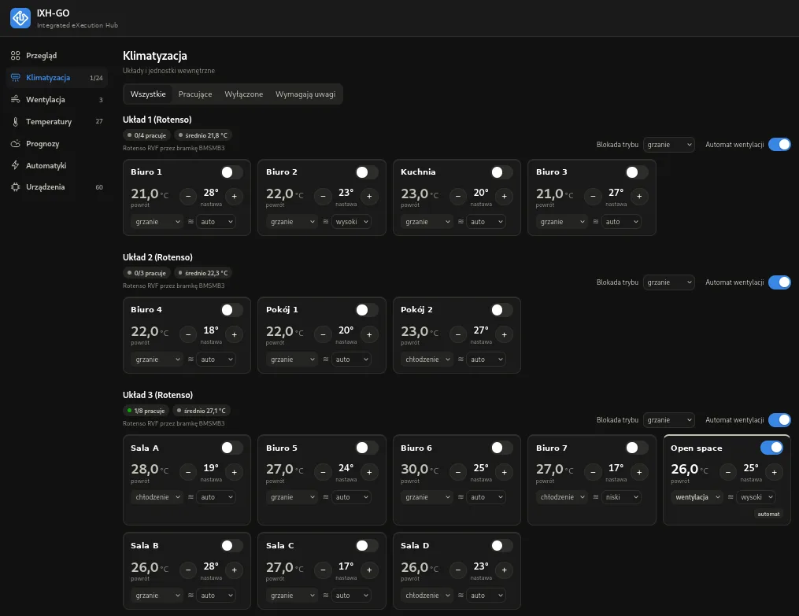
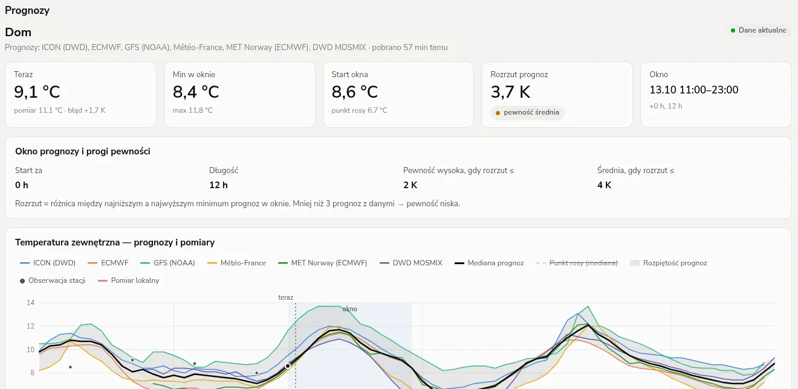
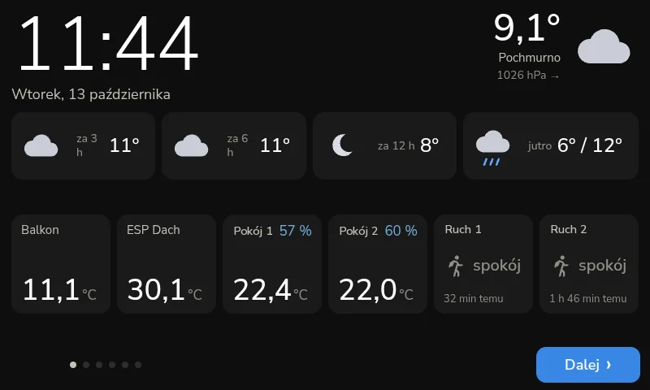
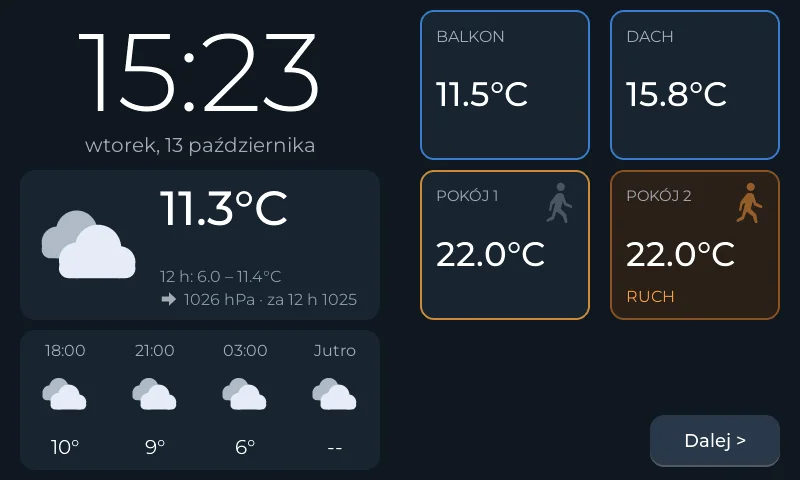
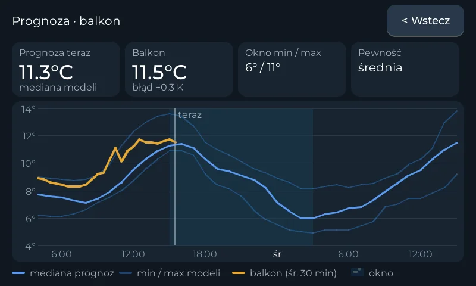

System automatyki budynkowej bez uzależnienia od producenta i zamkniętych technologii. Projektujemy i wdrażamy systemy sterowania oświetleniem, HVAC, wentylacją oraz systemami technicznymi budynków w oparciu o otwarte standardy i czytelną architekturę.
Systemy IXH wykorzystywane są w projektach obejmujących instalacje HVAC, systemy sterowania budynkami oraz integracje z systemami IT. Architektura została zaprojektowana tak, aby inwestor zachował pełną kontrolę nad systemem przez cały cykl życia obiektu.
System może być rozwijany, integrowany i serwisowany bez konieczności wymiany infrastruktury oraz bez uzależnienia od jednego dostawcy.
Ogrzewanie, chłodzenie, rekuperacja - pełne sterowanie klimatem budynku.
Inteligentne sterowanie oświetleniem z pełną automatyzacją scenariuszy.
Automatyczne sterowanie roletami i osłonami w oparciu o warunki pogodowe i preferencje.
Sterowanie i monitoring wszystkich systemów technicznych obiektu.
Panele operatorskie i dashboardy do monitorowania stanu wszystkich systemów.
Integracja z systemami IT i przemysłowymi przez otwarte protokoły i API.
W wielu systemach automatyki architektura powoduje trwałe uzależnienie od jednego producenta, technologii lub integratora. Skutkuje to:
Ograniczona możliwość rozbudowy
Utrudniona zmiana wykonawcy
Dodatkowe koszty przy integracji z innymi systemami
Projektujemy systemy w oparciu o otwarte standardy i pełną dokumentację, aby inwestor zachował kontrolę nad systemem i mógł go rozwijać niezależnie od dostawcy.
IXH — Integrated eXecution Hub: jeden punkt, w którym spotykają się i działają wszystkie systemy budynku. System projektowany jest tak, aby był zrozumiały i możliwy do utrzymania również przez inne firmy w przyszłości.
System oparty o otwarte standardy, bez proprietary lock-in.
Wolność wyboru dostawców sprzętu, oprogramowania i usług serwisowych.
Otwarte API i standardowe protokoły umożliwiają integrację z dowolnym systemem.
Modularna architektura pozwala na rozwój systemu bez kosztownej wymiany infrastruktury.
Przejrzysta organizacja kodu i konfiguracji zrozumiała dla każdego inżyniera.
Kompletna dokumentacja techniczna umożliwiająca serwis przez dowolną firmę.

Nasza platformaWłasna platforma automatyki budynkowej, rozwijana przez IXH. Łączy urządzenia różnych producentów w jeden czytelny system, którym zarządza inwestor.
IXH-GO to bramka i oprogramowanie sterujące instalowane bezpośrednio w obiekcie. Zbiera dane z instalacji HVAC, wentylacji, oświetlenia i czujników, wykonuje automatyki i udostępnia wszystko w jednym panelu — na komputerze, telefonie i panelu ściennym.
Platforma opiera się na otwartych protokołach, a każdy element systemu jest opisany i udokumentowany. Inwestor nie jest związany z jednym producentem sprzętu ani z jednym wykonawcą.
IXH-GO pracuje produkcyjnie w obiekcie komercyjnym — steruje klimatyzacją VRF, centralami wentylacyjnymi i siecią czujników temperatury.
Bramka pracuje w obiekcie — sterowanie, automatyki i historia danych działają także bez dostępu do internetu.
Klimatyzacja VRF, centrale wentylacyjne, falowniki, czujniki Zigbee i sterowniki ESP w jednym modelu danych na MQTT.
Panel przeglądarkowy, aplikacja na telefon z powiadomieniami push oraz dotykowe panele ścienne — jedno źródło danych.
Harmonogramy, scenariusze i alarmy, historia pomiarów oraz prognozy pogody uwzględniane w sterowaniu HVAC.
Subskrypcja nie jest wymagana do prawidłowego działania systemu. To opcja dla tych, którzy chcą, żeby ktoś stale pilnował instalacji i dbał o urządzenia.
Rezygnacja z subskrypcji nie wyłącza systemu ani żadnej jego funkcji. Zakres i cenę ustalamy indywidualnie dla obiektu — zapytaj o ofertę.
Wszystkie strefy i instalacje obiektu na jednym ekranie — stan, zużycie i alarmy w czasie rzeczywistym.
Prawdziwe ekrany z pracujących instalacji: panel WWW, prognozy pogody i panele ścienne w pomieszczeniach.





Mały komputer w szafie technicznej obiektu. Na nim działa cały system: adaptery urządzeń, automatyki, historia danych i panel WWW.
Łączą magistrale Modbus RTU klimatyzacji, central i falowników z siecią budynku — bez wymiany sterowników urządzeń.
Koordynator Zigbee i czujniki temperatury, wilgotności i ruchu — montaż bez kucia ścian, także w istniejących budynkach.
Dotykowe panele w pomieszczeniach: zegar, pogoda, prognoza, temperatury i sterowanie — z tych samych danych co panel WWW.
Platforma jest otwarta, więc kolejne instalacje dokładamy jako nowe adaptery — bez zmiany całego systemu.
Sekcje podlewania według harmonogramu, czujników wilgotności gleby i prognozy opadów — bez podlewania przed deszczem.
Podgląd kamer w panelu IXH-GO, zdjęcie przy alarmie lub wykryciu ruchu i powiadomienie push na telefon.
Taki podział umożliwia niezależny rozwój każdej warstwy oraz łatwą integrację z innymi systemami.
Każdy projekt realizujemy według sprawdzonej metodologii, zapewniając przejrzystość i pełną dokumentację na każdym etapie.
Głębokie zrozumienie wymagań obiektu, istniejącej infrastruktury i celów inwestora.
Zaprojektowanie otwartej architektury, dobór technologii i zaplanowanie integracji.
Iteracyjne wdrożenie systemu z testami na każdym etapie i ciągłą komunikacją.
Pełna dokumentacja architektury, konfiguracji i procedur serwisowych.
Długoterminowe partnerstwo, rozwój systemu i adaptacja do nowych wymagań.
Jeśli szukasz systemu automatyki budynkowej, który pozostaje elastyczny, skalowalny i niezależny od zamkniętych technologii — IXH jest rozwiązaniem dla Ciebie.
Odpowiadamy na zapytania dotyczące nowych instalacji, modernizacji istniejących systemów oraz wdrożeń IXH-GO.